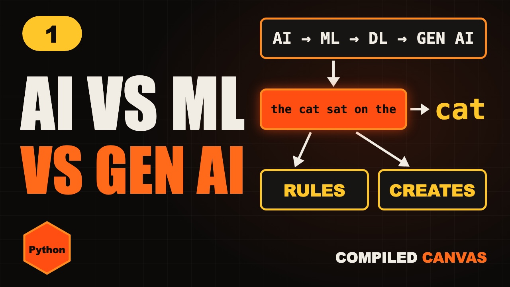

Home / Generative AI / Lesson 1
Lesson 1 · FoundationsWhat is generative AI?
AI vs ML vs deep learning vs generative AI, in simple words, with moving pictures and code you can copy or download.

1The four circles
Think of your address. India holds Maharashtra, Maharashtra holds Mumbai, and Mumbai holds your street. These four words work the same way.
- AI: any machine that does something that looks smart.
- Machine learning: it learns from examples.
- Deep learning: machine learning with many layers.
- Generative AI: it creates new things.
All generative AI you use today is AI. But not all AI is generative AI.
2AI can be just rules
AI doesn't have to learn. Here a developer wrote the rule by hand: if the email says "free money", it's spam.
def is_spam(email):
email = email.lower()
if "free money" in email:
return True
return False
print(is_spam("FREE MONEY now!")) # True
print(is_spam("Fr33 m0ney now!")) # FalseThe rule works until a spammer writes Fr33 m0ney. Then you need another rule, and another, forever.
3Machine learning finds the rules
Four students tell us how long they studied and what they scored. Nobody tells the machine the rule.
- Guess a line.
- Check how far it is from the dots. That gap is the error.
- Fix the line a little.
- Repeat until the error stops shrinking.
It found the rule by itself: marks = 20 × hours.
from sklearn.linear_model import LinearRegression
hours = [[1], [2], [3], [4]]
marks = [20, 40, 60, 80]
model = LinearRegression()
model.fit(hours, marks) # it learns here
print(model.predict([[5]])) # [100.]4Deep learning is just many layers
Hours and marks are easy. Now try writing rules for a cat in a photo: two ears, whiskers, lying down, half behind a sofa. It's impossible.
Deep learning passes the photo through layers, like a team on a factory line. Nobody tells each layer what to look for. It learns that from examples.
5Generative AI creates
It can create text, images, code, audio and video.
6It writes one word at a time
A chatbot keeps asking one question: what word is likely to come next? Press the button and watch a tiny model do it.
Our tiny model has read only this: the cat sat on the mat the cat ran to the mat
the
Press it a few times. You'll often get a sentence that was never in its text, like the cat sat on the cat. That's generating.
7Build it yourself
Here's that tiny generator in Python. Copy it, run it, then change the text to your own sentences.
import random
text = ("the cat sat on the mat "
"the cat ran to the mat")
words = text.split()
# Training: write down which word came after which
next_words = {}
for a, b in zip(words, words[1:]):
next_words.setdefault(a, []).append(b)
# Generating: keep picking a word that followed the last one
random.seed(7)
word = "the"
output = [word]
for _ in range(5):
word = random.choice(next_words[word])
output.append(word)
print(" ".join(output)) # the cat sat on the catA real chatbot uses the same idea at an enormous scale, with a large language model trained on huge amounts of text.
8What it is not
It generates an answer. It doesn't look one up.
It can sound sure and still invent things. That's a hallucination.
It doesn't feel anything. It predicts likely words.
It knows what it was trained on, unless it's connected to live tools.
Use it like a very fast junior: helpful, but check its work.
9Quick quiz
1. An app blocks emails using rules a developer wrote by hand. Is that machine learning?
No. Nobody learned anything. It's just rules.
2. Is all machine learning also AI?
Yes. Machine learning sits inside AI.
3. One model says if a photo is a cat. Another draws a new cat. Which one is generative?
The one that draws. It creates something new.